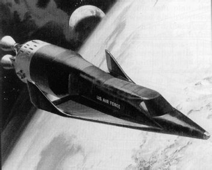
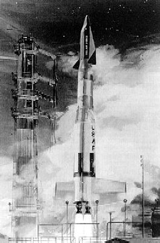

Программа «Дайнасор»
В первые годы космической эры советские и американские конструкторы неоднократно задавались целью создать крылатую машину, которая одинаково хорошо «чувствовала» бы себя и в воздухе, и в космосе. В первую очередь такие аппараты интересовали военных, видевших в них участников будущих «звездных войн», к которым начали готовиться еще до того, как запустили первые спутники. Описанный в предыдущей главе ракетный самолет Х-15 был исследовательской машиной, что изначально делало его лишь прототипом будущих аэрокосмических систем. А вот другая разработка, которая велась в США в те же годы, с самого начала задумывалась как боевая. И все технические решения принимались исходя из этого.
Днем рождения системы «Дайнасор», небольшого одноместного гиперзвукового ракетоплана, официально считается 21 декабря 1957 года, когда командование ВВС США выпустило директиву № 464L о начале первого этапа разработки. Фактически же эти работы были начаты на несколько месяцев раньше, когда в США началось обсуждение вопроса о возможности полета человека в космос.
В основу разработки системы «Дайнасор» была положена концепция частично-орбитального бомбардировщика, сформулированная в годы Второй мировой войны немецким конструктором Эйгеном Зенгером. Правда, американцы были намерены создать аппарат гораздо меньших размеров и с ограниченными функциональными возможностями. Да и задачи ставились перед ним несколько иные, чем перед бомбардировщиком Зенгера.
Работы по проекту «Дайнасор» планировалось вести в три этапа.
Главной задачей первого этапа являлось создание экспериментального летательного аппарата для получения данных о режимах полета на скоростях до 5,5 километра в секунду и на высотах более 80 километров. На этом же этапе планировалось оценить и боевые возможности системы.
На втором этапе характеристики аппарата предполагалось значительно улучшить. Применение двухступенчатого стартового ускорителя позволило бы ему развивать скорость до 6,7 километра в секунду, а высота полета должна была превышать 100 километров. Достигнув такой высоты, «Дайнасор» должен был перейти в режим планирования и приземлиться на удалении 9250 километров от места старта. При этом система должна была вести фото– и радиолокационную разведку, а при необходимости производить бомбометание.
На третьем этапе предполагалось создать ракетоплан, способный выходить на околоземную орбиту и там решать боевые задачи.
Уже к марту 1958 года были определены два основных подхода к решению задач первого этапа программы.
Первая концепция получила наименование «Сателлоид». Она состояла в следующем. Космическая ракета-носитель в качестве последней ступени несла орбитальный самолет, который доставлялся на высоту до 300 километров и там разгонялся до орбитальной скорости. После этого ракетоплан приступал к выполнению боевой задачи.
В рамках реализации этой концепции ВВС получили предложения от трех фирм.
Компания «Рипаблик» полагала, что следует изготовить планер с дельтовидным крылом и массой более 7 тонн. Основной его задачей было уничтожение целей на территории противника. Полезной нагрузкой должна была стать одна ракета класса «космос – земля» Кроме того, с помощью аппарата предполагалось решать задачи разведывательного характера.
Компания «Локхид» представила аналогичный проект, но с массой ракетоплана чуть более двух тонн.
И наконец, компания «Норт Америкэн» предложила использовать свой аппарат Х-15 в модифицированном варианте.
Вторая концепция основывалась на схеме высотного полета Эйгена Зенгера. В этом варианте аппарат «забрасывался» на сравнительно небольшую высоту – около 90 километров – и совершал полет по нисходящей траектории, периодически «отталкиваясь» от плотных слоев атмосферы.

«Дайнасор» на орбите
Эта концепция была отражена в проектах, полученных от шести компаний: «Конвейр», «Дуглас», «МакДоннелл», «Белл-Мартин», «Боинг» и «Воут». Варианты не сильно разнились. Все они предполагали разработку планера с дельтовидным или стреловидным крылом массой от 5 до 6 тонн. Главным отличием были ракеты, с помощью которых предполагалось доставлять летательные аппараты на нужную высоту.
14 ноября 1958 года ВВС и НАСА заключили соглашение, очерчивающее границы участия аэрокосмического ведомства в программе «Дайнасор». При этом ВВС брали на себя финансирование и руководство программой, а НАСА отвечало только за научно-исследовательские работы. В результате этого был сформирован межведомственный Технический совет, которому предстояло сделать окончательный выбор из предложенных проектов. И он был сделан. Из всех перечисленных выше проектов к дальнейшим проработкам были допущены два: проект компании «Белл-Мартин» и совместный проект компаний «Боинг» и «Воут».
Так как предполагалось сокращение финансирования работ, Совет пересмотрел и этапность их проведения. Вместо трех этапов в новой программе исследований осталось только два. Второй этап должен был начаться не позднее января 1962 года. В июле того же года планировалось осуществить первые суборбитальные пуски, а осенью 1963 года провести первый орбитальный полет.
23 апреля 1959 года Управление по научным исследованиям Министерства обороны США потребовало внести новые изменения в программу «Дайнасор». На первый план вновь вышла проблема создания гиперзвукового ракетоплана, способного развивать скорость до 6,7 километра в секунду. Запуск аппарата предлагалось проводить с помощью имеющихся в распоряжении ВВС и НАСА носителей.
29 октября 1959 года был выпущен еще один вариант технического задания к системе «Дайнасор», а Технический совет возвратился к старому рабочему плану, состоящему из трех этапов. Теперь на первом этапе предполагалось изготовить прототип пилотируемого планера массой до 4,2 тонны, который сразу предполагалось запустить с помощью модифицированной межконтинентальной баллистической ракеты «Титан-1». На втором этапе планировалось вывести аппарат на околоземную орбиту, отработать маневрирование в космосе и «отрепетировать» боевое применение «Дайнасор». На третьем этапе планировалось создать полномасштабную орбитальную боевую систему.
Согласно новому плану, первое из 19 испытаний со сбросом прототипа с самолета-носителя должно было состояться в апреле 1962 года. На июль 1963 года намечался первый суборбитальный пуск, а во второй половине 1964 года должны были состояться восемь суборбитальных пилотируемых полетов. На август 1965 года был назначен первый орбитальный полет. В 1967 году планировалось развернуть орбитальную группировку и провести бомбардировочные испытания. Полностью рабочая система, оснащенная ракетными комплексами «космос-земля» и «космос-космос», могла появиться в 1971 году.
9 ноября 1959 года победителя конкурса на разработку военного ракетоплана была объявлена группа «Боинг-Воут», а 27 апреля 1960 года военно-воздушные силы заказали десять аппаратов «Дайнасор», получивших еще одно наименование – «Система 620А».
Этап проектирования и разработки занял почти два года. Аппарат, который в итоге появился, имел гораздо больше сходства с проектом «Белл-Мартин», чем тот, который обещали построить победители конкурса «Боинг» и «Воут». Он состоял из дельтавидного крыла с размахом 6,22 метра и площадью 32 квадратных метра с двумя концевыми шайбами, вертикальных стабилизаторов и фюзеляжа со слегка приподнятой и закругленной на конце носовой частью. По большей части для изготовления применялся экзотический сплав Rene-41. Снизу его покрыли теплозащитным экраном из молибдена. Планер имел массу в полной комплектации 5167 килограммов.
Казалось бы, ничего не препятствовало разработчикам начать летные испытания и реализовать расписанную на долгие годы вперед программу. Но мешали ведомственные амбиции. Да и вопросы финансирования периодически тормозили работы и не давали программе обрести окончательные формы.
Несмотря на то, что ВВС США были одним из участников проекта «Дайнасор», 19 мая 1961 года они выступили с программой создания собственного пилотируемого космического аппарата Satellite Inspector (Спутник Инспектор), сокращенно SAINT (Святой). Эта система была способна идентифицировать и уничтожить спутник противника прямо на орбите. Предложенный двухместный демонстратор SAINT II имел концепцию аппарата с несущим корпусом и был развитием беспилотного аппарата SAINT I, первый испытательный полет которого был отменен в середине того же года. SAINT II должен был запускаться при помощи ракеты-носителя «Титан-2» с новой верхней ступенью. ВВС запланировали проведение 12 пилотируемых орбитальных полетов. SAINT II должен был иметь возможность маневрировать на низких и высоких орбитах.
Специалисты ВВС назвали несколько причин, по которым начальный вариант «Дайнасор» не мог выполнять те задачи, которые возлагались на SAINT II. Основной проблемой было ограничение по полезной нагрузке. Кроме того, авиацию не удовлетворяла скорость вхождения в атмосферу, которую невозможно было увеличить из-за ограничений по тепловым режимам. Оценочная стоимость программы SAINT II – 413,8 миллиона долларов на 1962–1965 финансовые годы – позволяла рассматривать ее в качестве серьезного соперника «Дайнасор» в борьбе за финансирование.

Пуск «Титана-3» с макетом «Дайнасора»
Однако те возможности, которые закладывались в «альтернативный» проект, делали его настолько фантастичным для того уровня развития пилотируемой космонавтики, что в октябре 1961 года командование ВВС, взвесив все «за» и «против», решило от него отказаться. Более того, было даже запрещено упоминать обозначение SAINT, ставшее синонимом «бездумного прожекта».
23 февраля 1962 года министр обороны США Роберт Макнамара одобрил последнюю реструктуризацию программы «Дайна-Сор». С этого момента она официально называлась научноисследовательской программой, имеющей целью исследовать и показать возможность выполнения пилотируемым орбитальным планером маневрирования при входе в атмосферу, а также посадки на взлетно-посадочную полосу в заданном месте Земли с необходимой точностью. После рассмотрения различных вариантов обозначения «Дайнасор» 19 июня 1962 года был обозначен как X-20. К этому времени стало очевидно, что возможность адекватного финансирования для носителя «Титан-3С», который приобретался отдельно, вскоре должна была стать главным ограничением при проведении разработки. Планировалось, что первый беспилотный испытательный полет X-20 будет выполнен во время четвертого пуска «Титана-3С», но дата запуска не могла быть определена до тех пор, пока не будет установлена готовность носителя. Формально финансирование «Титана-3С» было одобрено Конгрессом 15 октября 1962 года, и вскоре после этого был выпущен пересмотренный план запусков X-20.
В течение следующего года программа «Дайнасор» претерпела еще несколько изменений, которые должны были, по мнению разработчиков, сделать ее более конкурентоспособной. Однако 10 декабря 1963 года Макнамара отменил ее финансирование в пользу создания орбитальной станции MOL. Потом и эту программу закроют, но об этом чуть позже.
Так закончилась первая серьезная американская попытка построить пилотируемый орбитальный космический корабль многократного использования. На программу «Дайнасор» было истрачено 410 миллионов долларов. Все, что осталось от проекта сорокалетней давности, – модель орбитального ракетоплана Х-20, демонстрируемого в музее ВВС в Дейтоне, штат Огайо.
И в конце главы два слова о тех, кто должен был пилотировать аппарат «Дайнасор». Группу будущих пилотов сформировали в начале1962 года. В нее вошли шесть человек: Джеймс Уэйн Вуд, Генри Чарльз Гордон, Альберт Хэнлин Круз-младший, Уильям Джон Найт, Рассел Ли Роджерс и Милтон Орвилл Томпсон. Первые пятеро представляли ВВС, а шестой – НАСА. К серьезной подготовке никто из них приступить не успел из-за закрытия программы. Да и впоследствии никто из них не побывал в космосе. Правда, двоим, Найту и Томпсону, все-таки удалось приблизиться к границе атмосферы и космоса – оба принимали участие в полетах на ракетных самолетах Х-15, о чем я рассказывал в предыдущей главе.
Сегодня «Дайнасор», как и многие другие незавершенные разработки, почти забыта широкой публикой. Был всплеск интереса, когда появились «Спейс Шаттл» и «Буран». А потом вновь забвение. Вероятно, так и должно быть.